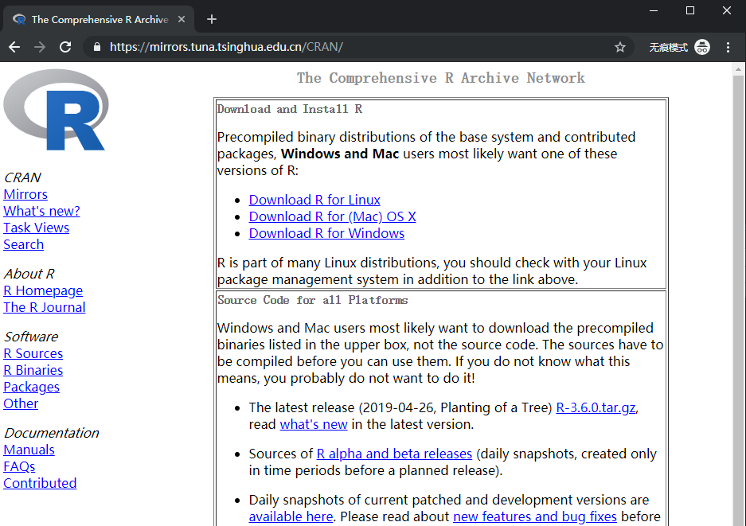
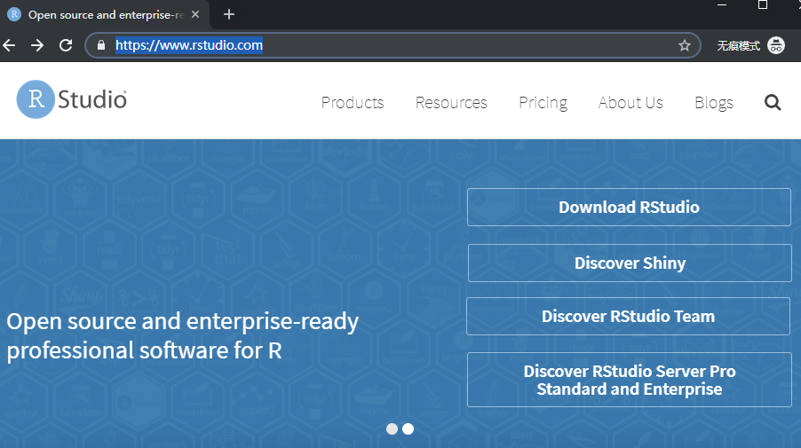
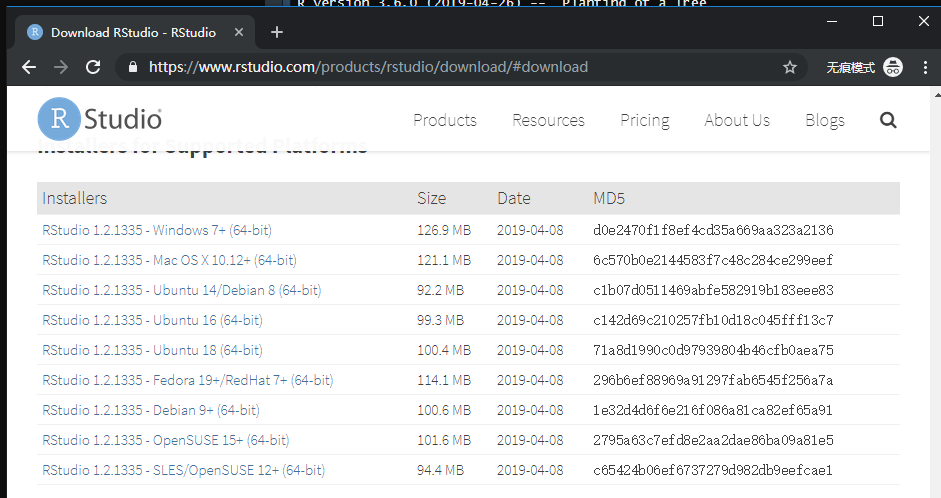
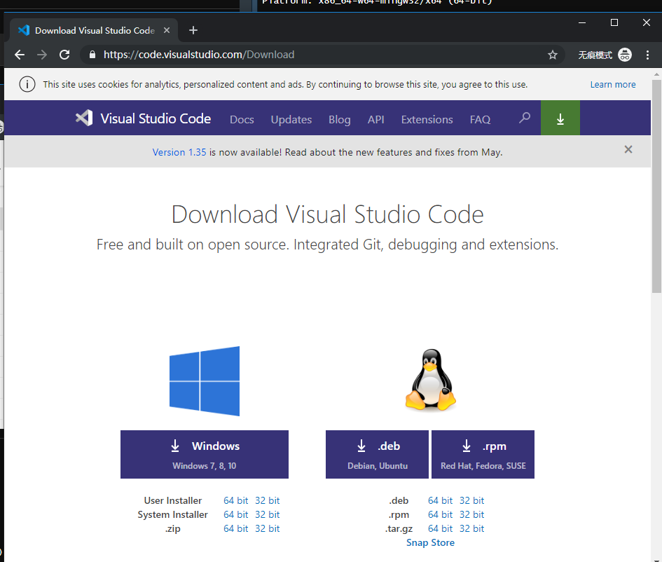
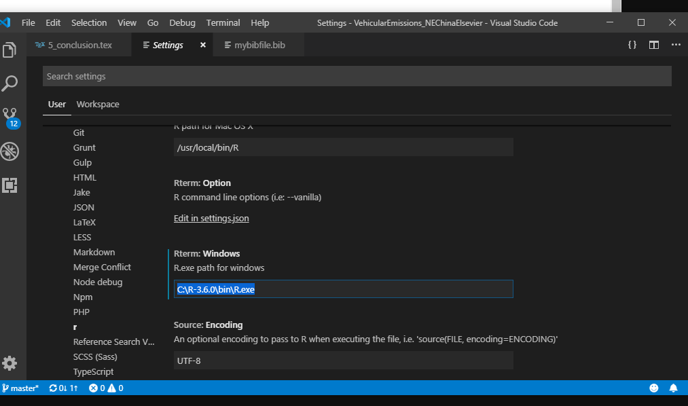

Chapter 2 Introduction
CHN
在开始课程之前，请按照下列步骤操作：
ENG
Before starting the course, follow these steps:
2.1 Install R
CHN
以这种方式下载R：
1.进入此网页：https：//cran.r-project.org/mirrors.html
2.进入任何中国镜子
ENG
Download R in this way:
- Go into this web page: https://cran.r-project.org/mirrors.html
- Enter into any Chinese mirror
CHN
例如，让我们进入https://mirrors.tuna.tsinghua.edu.cn/CRAN/ 在那里你点击你的系统并下载
ENG
- For instance, lets enter into https://mirrors.tuna.tsinghua.edu.cn/CRAN/ There you click on your system and download

2.2 Install Rstudio
CHN
进入https://www.rstudio.com，点击Rstudio下载并点击免费下载并安装。
ENG
Go into https://www.rstudio.com, click on Rstudio Download and click on FREE and download and install.


2.3 Install packages
install.packages(c("ggplot2", "cptcity", "sf", "raster", "stars", "data.table",
"readr", "readxl", "lubridate"))2.4 Get the data
dir.create("data")
download.file(
url = "https://github.com/ibarraespinosa/RIGA/raw/master/data/china_cities_20190413.xlsx",
destfile = "data/china_cities_20190413.xlsx")Download all the files from this link
2.5 Learn more
Check https://bookdown.org/
2.6 Install VSCODE (optional)
CHN
如果您喜欢Visual Studio（或其他文本编辑器），则可以在其上运行R. 进入此网站并下载并安装
ENG
If you like Visual Studio (or other text editor), you can run R on it. Go into this web and download and install
https://code.visualstudio.com/Download

CHN
然后，单击设置，扩展名，r并将路径放在安装R的位置
ENG
Then, click on settings, extensions, r and put the path where you installed R
